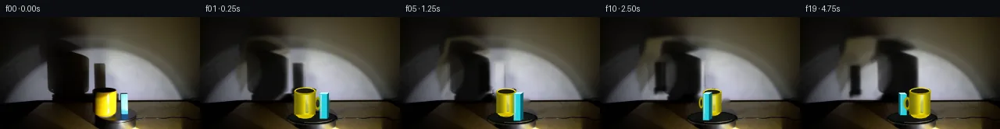

![首帧]()

Round 00
2026-11-05T00:55:11.336640+00:00像素候选变化代码 +274/−0inspection 更新
pixels b808de023458a8c6 · code 81ee4104a736ea7d
查看本轮 generate.py 真实 diff
--- previous/generate.py
+++ current/generate.py
@@ -0,0 +1,274 @@
+from pathlib import Path
+import math
+
+import cv2
+import numpy as np
+from PIL import Image, ImageDraw, ImageFilter, ImageFont
+
+import artifact_io
+
+
+ROOT = Path(__file__).resolve().parent
+W, H = 256, 144
+SS = 4
+
+
+def soft_mask(draw_fn, blur=2.0):
+ canvas = Image.new("L", (W * SS, H * SS), 0)
+ draw_fn(ImageDraw.Draw(canvas))
+ if blur:
+ canvas = canvas.filter(ImageFilter.GaussianBlur(blur * SS))
+ return np.asarray(canvas.resize((W, H), Image.Resampling.LANCZOS), np.float32) / 255.0
+
+
+def wall_shadow_masks():
+ def mug_shape(d):
+ d.polygon([(60*SS, 28*SS), (89*SS, 25*SS), (108*SS, 34*SS),
+ (114*SS, 43*SS), (114*SS, 94*SS), (105*SS, 101*SS),
+ (96*SS, 109*SS), (57*SS, 109*SS), (51*SS, 94*SS),
+ (53*SS, 59*SS)], fill=255)
+ d.ellipse((46*SS, 45*SS, 79*SS, 95*SS), fill=205)
+
+ def block_shape(d):
+ d.rounded_rectangle((119*SS, 57*SS, 135*SS, 101*SS), radius=2*SS, fill=255)
+
+ return soft_mask(mug_shape, 2.2), soft_mask(block_shape, 1.7)
+
+
+def build_clean_plate(src):
+ """Remove the photographed starting shadows/objects without external imagery."""
+ mug_region, block_region = wall_shadow_masks()
+ clean = src.astype(np.float32).copy()
+
+ # The spotlight is close to horizontally symmetric around x=140. Mirror
+ # the clean right half into the two shadow footprints, retaining wall grain.
+ xx = np.arange(W)
+ mirror_x = np.clip(280 - xx, 0, W - 1)
+ mirrored = src[:, mirror_x].astype(np.float32)
+ shadow_union = np.maximum(mug_region, block_region)[..., None]
+ wall_gate = (np.arange(H)[:, None] < 109).astype(np.float32)[..., None]
+ a = shadow_union * wall_gate
+ clean = clean * (1 - a) + mirrored * a
+
+ # Inpaint the compact physical-object footprints from their immediate
+ # surroundings. These are small enough for local texture continuation.
+ object_mask = np.zeros((H, W), np.uint8)
+ cv2.ellipse(object_mask, (135, 112), (17, 22), 0, 0, 360, 255, -1)
+ cv2.rectangle(object_mask, (152, 96), (165, 133), 255, -1)
+ object_mask = cv2.dilate(object_mask, np.ones((3, 3), np.uint8), iterations=1)
+ clean_u8 = np.clip(clean, 0, 255).astype(np.uint8)
+ clean_u8 = cv2.inpaint(clean_u8, object_mask, 4, cv2.INPAINT_TELEA)
+
+ # Re-establish the black platter where the objects occluded it. Its soft
+ # rim is fixed in screen space; its near-edge glints are from the fixed lamp.
+ ov = Image.new("RGBA", (W * SS, H * SS), (0, 0, 0, 0))
+ d = ImageDraw.Draw(ov)
+ d.ellipse((111*SS, 121*SS, 176*SS, 139*SS), fill=(7, 9, 9, 235))
+ d.ellipse((114*SS, 123*SS, 173*SS, 135*SS), fill=(15, 18, 17, 228))
+ d.arc((112*SS, 122*SS, 175*SS, 139*SS), 8, 171, fill=(79, 73, 49, 150), width=1*SS)
+ d.arc((116*SS, 124*SS, 171*SS, 136*SS), 19, 112, fill=(128, 117, 67, 115), width=1*SS)
+ ov = ov.resize((W, H), Image.Resampling.LANCZOS)
+ clean_u8 = np.asarray(Image.alpha_composite(Image.fromarray(clean_u8).convert("RGBA"), ov).convert("RGB"))
+ return clean_u8, mug_region, block_region
+
+
+def extract_shadow_alpha(src, clean, region):
+ lum_src = cv2.cvtColor(src, cv2.COLOR_RGB2GRAY).astype(np.float32)
+ lum_clean = cv2.cvtColor(clean, cv2.COLOR_RGB2GRAY).astype(np.float32)
+ ratio = lum_src / np.maximum(lum_clean, 8)
+ alpha = np.clip(1.0 - ratio, 0, 0.97) * region
+ # Keep the deep photographic core while closing tiny texture holes.
+ alpha = cv2.GaussianBlur(alpha, (0, 0), 0.65)
+ return np.clip(alpha, 0, 0.95)
+
+
+def warp_shadow(alpha, dx, dy, scale_x=1.0, scale_y=1.0, anchor=(86, 80)):
+ ax, ay = anchor
+ mat = np.array([[scale_x, 0, dx + ax * (1 - scale_x)],
… diff truncated; 187 more lines …